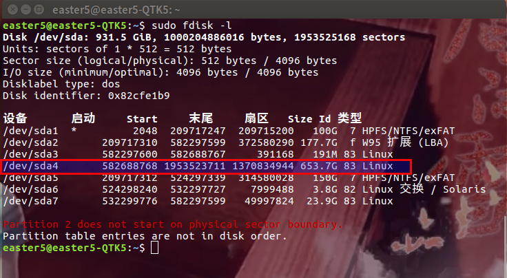
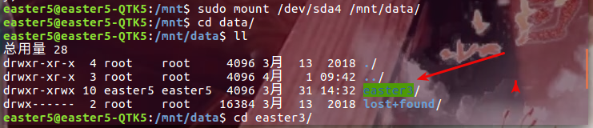
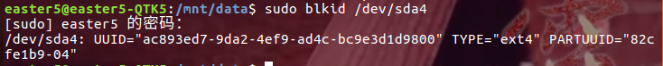

换源
桌面环境，采用图形界面换源：
system settings > Software & Updates > Download from
值改为阿里云源： http://mirrors.aliyun.com/ubuntu
命令行换源，参考这个博客
unzip 解压中文乱码问题
unzip 解压文件出现中文乱码现象，有一部分原因是因为文件是在 Windows 系统上用 GBK 压缩的，在 ubuntu 上用 UTF 解压时，中文就乱码了
一种解决方法是在命令行解压时指定编码（使用 gnomo 解压管理器依然乱码），一种是安装其他解压软件（为了节省空间我用的第一种～）
vim ~/.bashrc
# upzip add encode
alias unzip="unzip -O CP936"
source ~/.bashrc
开机无法自动挂载其他分区问题
我的硬盘是1T， 分给Ubuntu的启动分区是 20G ，去掉 windows 的 100G 分区，还有大概 600G 的闲置分区，
一个很典型的问题是，链接到这个 600G 分区的快捷方式每次在重启后都会失效， idea 和 atom 开机后就会检测这个路径失效，需要重新打开这个目录（路径长了就很麻烦）
所以我要做的就是让 ubuntu 开机就能挂载我的闲置分区。
1. 查看当前分区情况
sudo fdisk -l

根据磁盘给出的信息，确定想挂载的的磁盘（sda4），以及想挂载的位置（/mnt）
所以现在我的目的就是把 dev/sda4 挂载到 /mnt/data 下。
（/mnt/data 需要自己创建）
2. 创建挂载目录
sudo mkdir /mnt/data
3. 开始挂载
sudo mount /dev/sda4 /mnt/data/

挂载完成后进入到 /mnt/data 查看，验证我的 600G 已经挂载成功了
4. 设置开机自动挂载
挂载后重启进入到/mnt/data查看，已经是空目录了，所以还需要配置一下，实现开机自动挂载。
4.1 查询挂载硬盘 UUID
sudo blkid /dev/sda4

根据返回信息，得到 UUID 的值是ac893ed7-9da2-4ef9-ad4c-bc9e3d1d9800
磁盘格式是 ext4
4.2 将 UUID 添加到自动挂载目录中
sudo vim /etc/fstab
在文件末尾添加磁盘信息，按照下面格式：[UUID=************] [挂载磁盘分区] [挂载磁盘格式] 0 2
UUID=ac893ed7-9da2-4ef9-ad4c-bc9e3d1d9800 /mnt/data ext4 defaults 0 2
第一个数字：0表示开机不检查磁盘，1表示开机检查磁盘；
第二个数字：0表示交换分区，1代表启动分区（Linux），2表示普通分区
我的闲置分区是在安装Ubuntu时利用剩余空间创建的，磁盘格式为ext4
【提示～】：
挂载成功后，重启后原来的链接还是会失效～删除就可以，然后从 /mnt目录创建链接，这个链接是永久有效的～～
中文输入法（搜狗）
1. 64位linux
2. 安装
sudo dpkg -i sogoupinyin_2.2.0.0102_amd64.deb
sudo apt-get install -f
3. 配置
配置System settings
进入System Settings > Language Support > Keyboard input method system
将值改为fcitx 然后注销重启在bash中打开 fcitx Configure Input Method 下添加
sogou Pinyin
4. 自定义短语设置
自定义简称，懒人福音
设置/高级/自定义短语设置
我的配置文件
sj,1=#$year-$month_mm-$day_dd-
可惜搜狗输入法linux下没有截屏插件~暂时用 shutter 代替